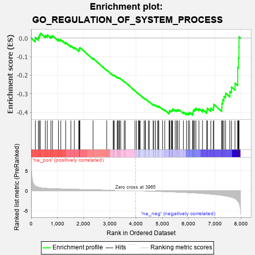
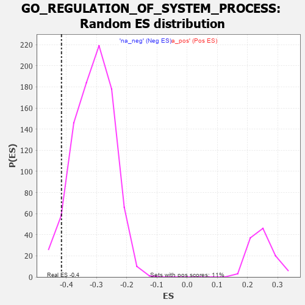

| | | Dataset | 7d |
| Phenotype | NoPhenotypeAvailable |
| Upregulated in class | na_neg |
| GeneSet | GO_REGULATION_OF_SYSTEM_PROCESS |
| Enrichment Score (ES) | -0.41616789 |
| Normalized Enrichment Score (NES) | -1.3354033 |
| Nominal p-value | 0.054054055 |
| FDR q-value | 0.4299369 |
| FWER p-Value | 1.0 |
Table: GSEA Results Summary

Fig 1: Enrichment plot: GO_REGULATION_OF_SYSTEM_PROCESS
Profile of the Running ES Score & Positions of GeneSet Members on the Rank Ordered List
| PROBE | GENE SYMBOL | GENE_TITLE | RANK IN GENE LIST | RANK METRIC SCORE | RUNNING ES | CORE ENRICHMENT | | 1 | CSRP3 | | | 161 | 1.186 | 0.0028 | No |
| 2 | HGF | | | 276 | 0.870 | 0.0055 | No |
| 3 | TNNC2 | | | 315 | 0.795 | 0.0162 | No |
| 4 | GSK3A | | | 351 | 0.745 | 0.0264 | No |
| 5 | SRF | | | 542 | 0.615 | 0.0143 | No |
| 6 | KCND2 | | | 617 | 0.590 | 0.0165 | No |
| 7 | SETD3 | | | 754 | 0.544 | 0.0099 | No |
| 8 | GLRX3 | | | 813 | 0.529 | 0.0130 | No |
| 9 | AKT1 | | | 1040 | 0.476 | -0.0064 | No |
| 10 | SRC | | | 1128 | 0.459 | -0.0084 | No |
| 11 | MTG1 | | | 1317 | 0.426 | -0.0239 | No |
| 12 | INHBB | | | 1514 | 0.388 | -0.0412 | No |
| 13 | TPPP | | | 1646 | 0.365 | -0.0506 | No |
| 14 | FMR1 | | | 1816 | 0.334 | -0.0655 | No |
| 15 | RNF10 | | | 1833 | 0.331 | -0.0611 | No |
| 16 | GATA4 | | | 1837 | 0.330 | -0.0550 | No |
| 17 | SMAD4 | | | 1860 | 0.326 | -0.0514 | No |
| 18 | RNLS | | | 2358 | 0.252 | -0.1095 | No |
| 19 | DAPK3 | | | 2880 | 0.169 | -0.1723 | No |
| 20 | MTMR2 | | | 3126 | 0.133 | -0.2008 | No |
| 21 | TLX3 | | | 3140 | 0.131 | -0.1998 | No |
| 22 | GCH1 | | | 3166 | 0.127 | -0.2005 | No |
| 23 | CTDP1 | | | 3279 | 0.109 | -0.2126 | No |
| 24 | SMAD3 | | | 3303 | 0.105 | -0.2134 | No |
| 25 | PARP2 | | | 3316 | 0.103 | -0.2129 | No |
| 26 | PDE9A | | | 3360 | 0.095 | -0.2165 | No |
| 27 | SMAD7 | | | 3369 | 0.093 | -0.2157 | No |
| 28 | KCNK1 | | | 3413 | 0.088 | -0.2194 | No |
| 29 | PIN1 | | | 3543 | 0.069 | -0.2345 | No |
| 30 | PARD3 | | | 3584 | 0.063 | -0.2383 | No |
| 31 | GLRA1 | | | 3957 | 0.001 | -0.2855 | No |
| 32 | PARP1 | | | 4014 | -0.010 | -0.2924 | No |
| 33 | PDE4B | | | 4089 | -0.022 | -0.3013 | No |
| 34 | MTOR | | | 4114 | -0.025 | -0.3039 | No |
| 35 | PLCE1 | | | 4127 | -0.028 | -0.3049 | No |
| 36 | WNK3 | | | 4153 | -0.034 | -0.3074 | No |
| 37 | TBX2 | | | 4303 | -0.060 | -0.3251 | No |
| 38 | FIG4 | | | 4348 | -0.068 | -0.3294 | No |
| 39 | ADRB2 | | | 4352 | -0.068 | -0.3284 | No |
| 40 | LRRK2 | | | 4467 | -0.087 | -0.3412 | No |
| 41 | MEF2A | | | 4499 | -0.095 | -0.3432 | No |
| 42 | NMUR2 | | | 4646 | -0.127 | -0.3593 | No |
| 43 | ITPR1 | | | 4661 | -0.130 | -0.3585 | No |
| 44 | CNN1 | | | 4727 | -0.144 | -0.3639 | No |
| 45 | WASF3 | | | 4730 | -0.145 | -0.3613 | No |
| 46 | P2RX4 | | | 4813 | -0.161 | -0.3686 | No |
| 47 | SGK1 | | | 4852 | -0.168 | -0.3701 | No |
| 48 | DLG1 | | | 4860 | -0.169 | -0.3676 | No |
| 49 | KLF4 | | | 5005 | -0.198 | -0.3820 | No |
| 50 | DRD2 | | | 5088 | -0.221 | -0.3881 | No |
| 51 | SSH1 | | | 5254 | -0.258 | -0.4040 | No |
| 52 | PTEN | | | 5262 | -0.261 | -0.3997 | No |
| 53 | RIMS2 | | | 5272 | -0.265 | -0.3957 | No |
| 54 | CELF4 | | | 5275 | -0.266 | -0.3907 | No |
| 55 | NPY2R | | | 5331 | -0.281 | -0.3922 | No |
| 56 | ITPR3 | | | 5361 | -0.288 | -0.3902 | No |
| 57 | GRIN1 | | | 5381 | -0.291 | -0.3869 | No |
| 58 | DLG4 | | | 5388 | -0.293 | -0.3819 | No |
| 59 | ACTN3 | | | 5486 | -0.315 | -0.3881 | No |
| 60 | FGFR1 | | | 5543 | -0.332 | -0.3887 | No |
| 61 | SPHK1 | | | 5576 | -0.339 | -0.3861 | No |
| 62 | G6PD | | | 5638 | -0.358 | -0.3868 | No |
| 63 | ADA | | | 5798 | -0.405 | -0.3990 | No |
| 64 | KCNQ1 | | | 5918 | -0.441 | -0.4055 | No |
| 65 | KCNH6 | | | 5988 | -0.467 | -0.4051 | No |
| 66 | TRPC3 | | | 6035 | -0.483 | -0.4014 | No |
| 67 | ROCK1 | | | 6152 | -0.520 | -0.4060 | Yes |
| 68 | STIM1 | | | 6169 | -0.528 | -0.3976 | Yes |
| 69 | THRB | | | 6178 | -0.531 | -0.3882 | Yes |
| 70 | TPM1 | | | 6226 | -0.545 | -0.3835 | Yes |
| 71 | STK39 | | | 6274 | -0.563 | -0.3784 | Yes |
| 72 | TRPM4 | | | 6390 | -0.612 | -0.3810 | Yes |
| 73 | ACE | | | 6526 | -0.674 | -0.3849 | Yes |
| 74 | PAK1 | | | 6691 | -0.757 | -0.3909 | Yes |
| 75 | EGFR | | | 6708 | -0.765 | -0.3779 | Yes |
| 76 | MGLL | | | 6842 | -0.838 | -0.3784 | Yes |
| 77 | GHSR | | | 6937 | -0.894 | -0.3728 | Yes |
| 78 | SCN4A | | | 6955 | -0.910 | -0.3571 | Yes |
| 79 | HCN4 | | | 7260 | -1.134 | -0.3734 | Yes |
| 80 | CDK9 | | | 7266 | -1.138 | -0.3517 | Yes |
| 81 | ANK2 | | | 7298 | -1.170 | -0.3327 | Yes |
| 82 | GPD1L | | | 7343 | -1.215 | -0.3144 | Yes |
| 83 | GRM1 | | | 7404 | -1.272 | -0.2971 | Yes |
| 84 | CALM1 | | | 7567 | -1.499 | -0.2882 | Yes |
| 85 | KCNN2 | | | 7629 | -1.611 | -0.2644 | Yes |
| 86 | PDE4D | | | 7764 | -1.944 | -0.2432 | Yes |
| 87 | ECE1 | | | 7867 | -2.498 | -0.2072 | Yes |
| 88 | CALM3 | | | 7869 | -2.525 | -0.1578 | Yes |
| 89 | CAV3 | | | 7896 | -2.739 | -0.1073 | Yes |
| 90 | PI16 | | | 7914 | -2.948 | -0.0517 | Yes |
| 91 | ASIC2 | | | 7917 | -2.995 | 0.0069 | Yes |
Table: GSEA details [plain text format]

Fig 2: GO_REGULATION_OF_SYSTEM_PROCESS: Random ES distribution
Gene set null distribution of ES for GO_REGULATION_OF_SYSTEM_PROCESS